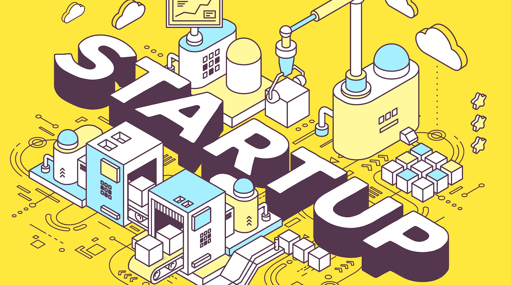
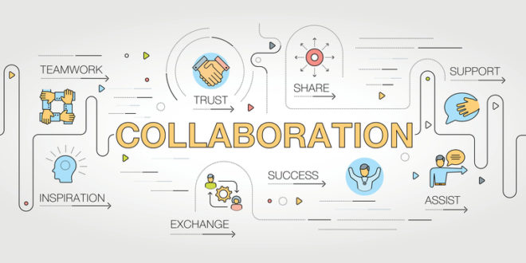

☰
Close ×
Search Startups
My Profile
Today's Home
Welcome to S2S, Student to Start-up!.
What we do.
S2S is a relaxed and intuitive site, that allows students to connect with the start-ups that they choose. We are a striving to make your experience as smooth and enjoyable as possible. Feel free to contact us with our links below and let us know what you think! We hope you find the projects you are passionate about, and strive to use our services to help you change the world.

How to S2S.
The process in which we operate is not a complicated one. We make it as easy as possible to connect with start-ups, and communicate. You will start with a profile page, where you are able to express your skills as well as your personalities. Start-ups want to know who you are and what you are passionate about before they hire you within their very exclusive teams. Remember they are start-ups, not corporations, they will be less formal as they are also just a small group of individuals.
